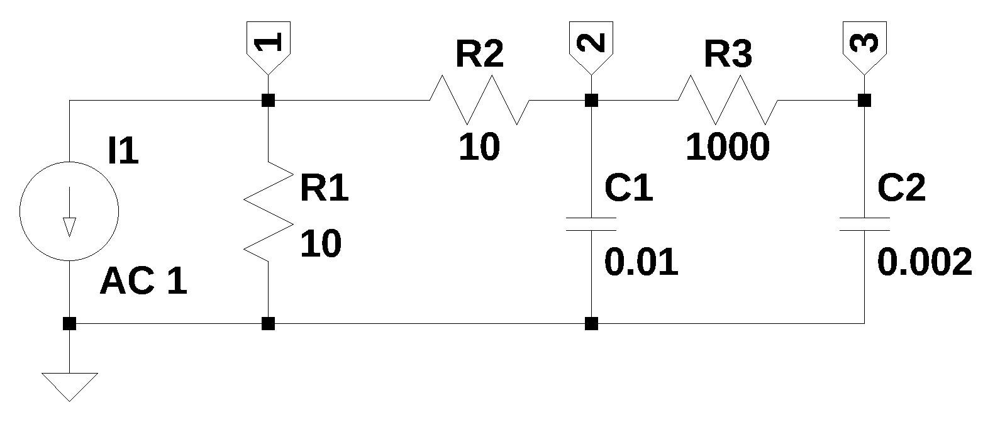
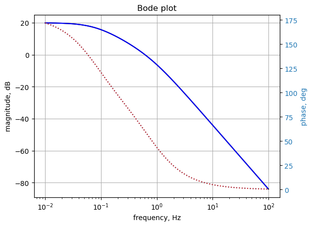
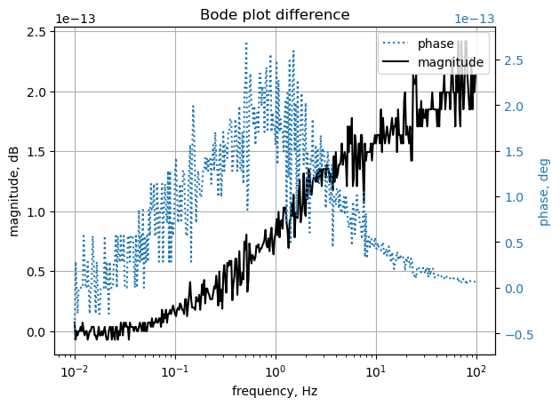

import os
from sympy import *
import numpy as np
from scipy import signal
import matplotlib.pyplot as plt
init_printing()19 test_15
This test circuit has no unknown current sources.
empty matrices: B, C, D, J, Ev,
This circuit has
Net list report
number of lines in netlist: 6
number of branches: 6
number of nodes: 3
number of unknown currents: 0
number of RLC (passive components): 5
number of inductors: 0
number of independent voltage sources: 0
number of independent current sources: 1
number of op amps: 0
number of E - VCVS: 0
number of G - VCCS: 0
number of F - CCCS: 0
number of H - CCVS: 0
number of K - Coupled inductors: 0
* test_15.asc
I1 1 0 1
R1 1 0 10
R2 2 1 10
R3 3 2 1000
C1 2 0 0.01
C2 3 0 0.002
This netlist is read into the Symbolic Modified Nodal Analysis Jupyter notebook and the following circuit equations were generated.
\(v_{1} \cdot \left(\frac{1}{R_{2}} + \frac{1}{R_{1}}\right) - \frac{v_{2}}{R_{2}} = - I_{1}\)
\(v_{2} \left(C_{1} s + \frac{1}{R_{3}} + \frac{1}{R_{2}}\right) - \frac{v_{3}}{R_{3}} - \frac{v_{1}}{R_{2}} = 0\)
\(v_{3} \left(C_{2} s + \frac{1}{R_{3}}\right) - \frac{v_{2}}{R_{3}} = 0\)
Copy the text strings generated by the Symbolic Modified Nodal Analysis Jupyter notebook to the cell below. used in nodal analysis
v1, C2, R2, I1, C1, R3, v2, v3, R1, s = symbols(' v1 C2 R2 I1 C1 R3 v2 v3 R1 s ')
A = Matrix([[1/R2 + 1/R1, -1/R2, 0], [-1/R2, C1*s + 1/R3 + 1/R2, -1/R3], [0, -1/R3, C2*s + 1/R3]])
X = Matrix( [v1, v2, v3] )
Z = Matrix( [-I1, 0, 0] )
equ = Eq(A*X,Z)
equ\(\displaystyle \left[\begin{matrix}v_{1} \cdot \left(\frac{1}{R_{2}} + \frac{1}{R_{1}}\right) - \frac{v_{2}}{R_{2}}\\v_{2} \left(C_{1} s + \frac{1}{R_{3}} + \frac{1}{R_{2}}\right) - \frac{v_{3}}{R_{3}} - \frac{v_{1}}{R_{2}}\\v_{3} \left(C_{2} s + \frac{1}{R_{3}}\right) - \frac{v_{2}}{R_{3}}\end{matrix}\right] = \left[\begin{matrix}- I_{1}\\0\\0\end{matrix}\right]\)
19.1 Symbolic solution
symbolic_solution = solve(equ,X)
symbolic_solution\(\displaystyle \left\{ v_{1} : \frac{- C_{1} C_{2} I_{1} R_{1} R_{2} R_{3} s^{2} - C_{1} I_{1} R_{1} R_{2} s - C_{2} I_{1} R_{1} R_{2} s - C_{2} I_{1} R_{1} R_{3} s - I_{1} R_{1}}{C_{1} C_{2} R_{1} R_{3} s^{2} + C_{1} C_{2} R_{2} R_{3} s^{2} + C_{1} R_{1} s + C_{1} R_{2} s + C_{2} R_{1} s + C_{2} R_{2} s + C_{2} R_{3} s + 1}, \ v_{2} : \frac{- C_{2} I_{1} R_{1} R_{3} s - I_{1} R_{1}}{C_{1} C_{2} R_{1} R_{3} s^{2} + C_{1} C_{2} R_{2} R_{3} s^{2} + C_{1} R_{1} s + C_{1} R_{2} s + C_{2} R_{1} s + C_{2} R_{2} s + C_{2} R_{3} s + 1}, \ v_{3} : - \frac{I_{1} R_{1}}{C_{1} C_{2} R_{1} R_{3} s^{2} + C_{1} C_{2} R_{2} R_{3} s^{2} + C_{1} R_{1} s + C_{1} R_{2} s + C_{2} R_{1} s + C_{2} R_{2} s + C_{2} R_{3} s + 1}\right\}\)
19.2 Numeric solution
# enter the element values, set I2=0
equ1a = equ.subs({
I1:1.0000e+00,
R1:1.0000e+01,
R2:1.0000e+01,
R3:1.0000e+03,
C1:1.0000e-02,
C2:2.0000e-03
})
equ1a # display the equations\(\displaystyle \left[\begin{matrix}0.2 v_{1} - 0.1 v_{2}\\- 0.1 v_{1} + v_{2} \cdot \left(0.01 s + 0.101\right) - 0.001 v_{3}\\- 0.001 v_{2} + v_{3} \cdot \left(0.002 s + 0.001\right)\end{matrix}\right] = \left[\begin{matrix}-1.0\\0\\0\end{matrix}\right]\)
u1 = solve(equ1a,X)
u1\(\displaystyle \left\{ v_{1} : \frac{- 50.0 s^{2} - 530.0 s - 250.0}{10.0 s^{2} + 56.0 s + 25.0}, \ v_{2} : \frac{- 500.0 s - 250.0}{10.0 s^{2} + 56.0 s + 25.0}, \ v_{3} : - \frac{250.0}{10.0 s^{2} + 56.0 s + 25.0}\right\}\)
19.3 AC analysis
Solve equations for \(\omega\) equal to 1 radian per second, s = 1j.
1/(2*np.pi)\(\displaystyle 0.159154943091895\)
equ1a_1rad_per_s = equ1a.subs({s:1j})
equ1a_1rad_per_s # display the equations\(\displaystyle \left[\begin{matrix}0.2 v_{1} - 0.1 v_{2}\\- 0.1 v_{1} + v_{2} \cdot \left(0.101 + 0.01 i\right) - 0.001 v_{3}\\- 0.001 v_{2} + v_{3} \cdot \left(0.001 + 0.002 i\right)\end{matrix}\right] = \left[\begin{matrix}-1.0\\0\\0\end{matrix}\right]\)
ans1 = solve(equ1a_1rad_per_s,X)
ans1\(\displaystyle \left\{ v_{1} : -9.72329663790538 + 0.966974114846772 i, \ v_{2} : -9.44659327581077 + 1.93394822969354 i, \ v_{3} : -1.11573936328474 + 4.16542695626302 i\right\}\)
for name, value in ans1.items():
print('{:5s}: mag: {:10.6f} phase: {:11.5f} deg'.format(str(name),float(abs(value)),float(arg(value)*180/np.pi)))v1 : mag: 9.771261 phase: 174.32065 deg
v2 : mag: 9.642525 phase: 168.43003 deg
v3 : mag: 4.312268 phase: 104.99508 degThe following results were obtained from LTSpice.
--- AC Analysis ---
frequency: 0.159155 Hz
V(1): mag: 9.77126 phase: 174.321° voltage
V(2): mag: 9.64252 phase: 168.43° voltage
V(3): mag: 4.31227 phase: 104.995° voltage
I(C1): mag: 0.0964252 phase: -101.57° device_current
I(C2): mag: 0.00862454 phase: -165.005° device_current
I(I1): mag: 1 phase: 0° device_current
I(R1): mag: 0.977126 phase: 174.321° device_current
I(R2): mag: 0.100579 phase: 74.0313° device_current
I(R3): mag: 0.00862454 phase: 14.9951° device_currentThe LTSpice results are the same.
19.4 AC Sweep
Looking at node 5 voltage and comparing the results with those obtained from LTSpice. Thr frequency sweep is from 0.01 Hz to 1 Hz.
Load the csv file of node 5 voltage over the sweep range and plot along with the results obtained from SymPy.
os.chdir('/home/jeff32/Documents/Solving Electrical Engineering Problems with Python Blog/MNA Test Circuits/test_15/') # change directory to net list location
fn = 'test_15.csv' # data from LTSpice
#LTSpice_data = np.loadtxt(fn, delimiter='\t',skiprows=1)
LTSpice_data = np.genfromtxt(fn, delimiter=',',skip_header=1)
# change the working director back to the Jupyter folder
os.chdir('/home/jeff32/Documents/JupyterLab/Node Analysis/') # initaliaze some empty arrays
frequency = np.zeros(len(LTSpice_data))
V_1 = np.zeros(len(LTSpice_data)).astype(complex)
V_2 = np.zeros(len(LTSpice_data)).astype(complex)
V_3 = np.zeros(len(LTSpice_data)).astype(complex)# convert the csv data to complex numbers and store in the array
for i in range(len(LTSpice_data)):
frequency[i] = LTSpice_data[i][0]
V_1[i] = LTSpice_data[i][1] + LTSpice_data[i][2]*1j
V_2[i] = LTSpice_data[i][3] + LTSpice_data[i][4]*1j
V_3[i] = LTSpice_data[i][5] + LTSpice_data[i][6]*1jLoad the Laplace polyinominal for node 5
H = u1[v3]
H\(\displaystyle - \frac{250.0}{10.0 s^{2} + 56.0 s + 25.0}\)
num, denom = fraction(H) #returns numerator and denominator
# convert symbolic to numpy polynomial
a = np.array(Poly(num, s).all_coeffs(), dtype=float)
b = np.array(Poly(denom, s).all_coeffs(), dtype=float)
system_v3 = (a, b) # system for circuit 1#x = np.linspace(0.01*2*np.pi, 1*2*np.pi, 10000, endpoint=True)
x = np.logspace(-2, 2, 400, endpoint=False)*2*np.pi
w, mag_v3, phase_v3 = signal.bode(system_v3, w=x) # returns: rad/s, mag in dB, phase in degPlot the results.
fig, ax1 = plt.subplots()
ax1.set_ylabel('magnitude, dB')
ax1.set_xlabel('frequency, Hz')
plt.semilogx(frequency, 20*np.log10(np.abs(V_3)),'-k') # Bode magnitude plot
plt.semilogx(w/(2*np.pi), mag_v3,'-b') # Bode magnitude plot
ax1.tick_params(axis='y')
#ax1.set_ylim((-30,20))
plt.grid()
# instantiate a second y-axes that shares the same x-axis
ax2 = ax1.twinx()
color = 'tab:blue'
plt.semilogx(frequency, np.angle(V_3)*180/np.pi,':',color=color) # Bode phase plot
plt.semilogx(w/(2*np.pi), phase_v3,':',color='tab:red') # Bode phase plot
ax2.set_ylabel('phase, deg',color=color)
ax2.tick_params(axis='y', labelcolor=color)
#ax2.set_ylim((-5,25))
plt.title('Bode plot')
plt.show()
fig, ax1 = plt.subplots()
ax1.set_ylabel('magnitude, dB')
ax1.set_xlabel('frequency, Hz')
plt.semilogx(frequency[0:-1], 20*np.log10(np.abs(V_3[0:-1]))-mag_v3,'-k') # Bode magnitude plot
#plt.semilogx(w/(2*np.pi), mag_v3,'-b') # Bode magnitude plot
ax1.tick_params(axis='y')
#ax1.set_ylim((-30,20))
plt.grid()
# instantiate a second y-axes that shares the same x-axis
ax2 = ax1.twinx()
color = 'tab:blue'
plt.semilogx(frequency[0:-1], np.angle(V_3[0:-1])*180/np.pi-phase_v3,':',color=color,label='phase') # Bode phase plot
#plt.semilogx(w/(2*np.pi), phase_v3,':',color='tab:red') # Bode phase plot
ax2.set_ylabel('phase, deg',color=color)
ax2.tick_params(axis='y', labelcolor=color)
#ax2.set_ylim((-5,25))
ax2.plot(np.NaN, np.NaN, color='k', label='magnitude')
plt.legend()
plt.title('Bode plot difference')
plt.show()
The SymPy and LTSpice results overlay each other.